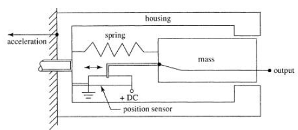
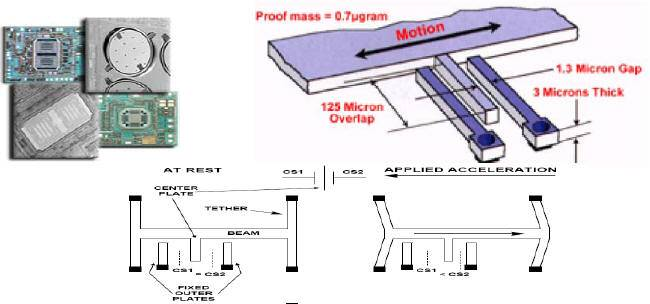
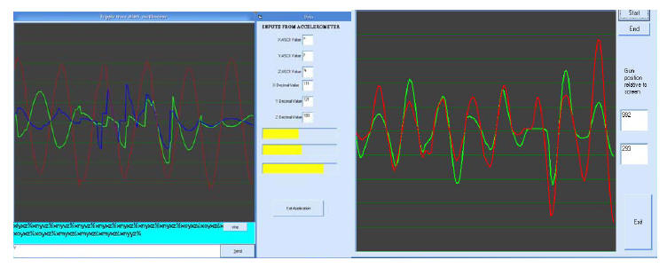
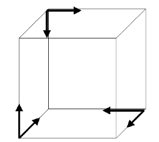
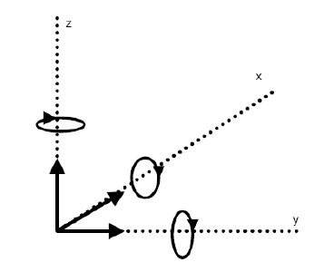
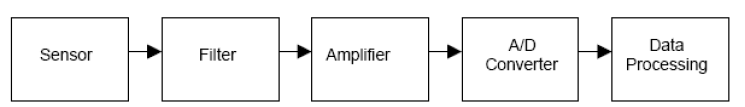

|
Technologies available and used |
||||
|
Commercial
off the shelf systems (COTS) Commercial off the shelf VR devices are priced heavily and use proprietary technologies. However, a study of these systems shows that these devices can be created using cheap COTS components at a fraction of the cost. The initial quality and functionality may not be comparable to a commercial system at this stage but the system can be refined over time to make it more accurate and provide more features. A number of products were studied to explore their technologies and implementations. A summary of what we found out is presented below. The keywords and brand names can be searched on the Internet for more detailed information. Additional details and references to these sites have deliberately not been added to avoid cluttering the document. The following is a limited list of products available for various technologies. Many more such products can be found on the net but the ones mentioned generally cover all of the popular techniques used. Optical and Infra Red light based systems:
Magnetic:
Ultrasonic and RF:
MEMS Linear Accelerometer:
MEMS Gyroscope
Techniques/Technologies All the products listed above use some of the techniques that we mention in the preceding paragraphs. The techniques used were analysed to see if any of these could be cheaply adapted to create our own VR devices. 1. Optical and IR: Trackers can be built using cameras or other position-sensitive optical devices to track Infrared beacons or markers, and using laser range measurement techniques. Both methods tend to provide reasonable range, accuracy and resolution, but suffer from line-of-sight restrictions, inaccuracies due to reflections and very high cost. The light source generates light encoded at a frequency that the light sensor is best able to detect, and that is not likely to be generated by other nearby sources. Infra-red light is used in most optical sensors. To make the light sensing system more foolproof, optical proximity sensor light sources, pulse the infra-red light on and off at a particular fixed frequency. The light sensor circuit is designed so that light that is not pulsing at this frequency is rejected. It works on the principle similar to a radio frequency transceiver but here the sensors are optical in nature. Other methods using Digital image processing are expensive and difficult to implement and the accuracy, refresh rate depends largely on the cameras used though some manipulation is possible in software. A optimal graphics software solution to the problem was not found implemented by any manufacturer on the net though a number of solutions using both proprietary hardware and software were evident from a number of websites. For all real-time applications most implementations were in hardware and the interfaces for interaction provided by software. 2. Magnetic: It does not have the line-of-sight problems of optical and ultrasonic systems. The biggest problems with magnetic systems are distortions caused by metallic objects, and a very rapid decrease in accuracy and resolution with distance and orientation. Older technologies used magnetic sensors emitting pulses for detecting positional changes. They consisted of magnets embedded in the moving object, and stationary coils. New technologies use magnetometer ASIC devices such as the ones used in digital compass, but these are also prone to inaccuracies caused due to tilt of the horizontal alignment axis. 3. Ultrasonic and RF: Time-of-flight trackers can have relatively large range at low cost, but are geometry specific and require a reference point to be defined. The need to wait for echoes to die out before initiating a new measurement can cause low update rates, particularly when tracking larger volumes. 4. Semi-Magnetic Fluid: These are less accurate than the Micro electro mechanical devices (referred to as MEMS henceforth) based inertial sensors. A glass or plastic vial is filled with a conductive fluid; electrodes in the fluid are used to sense resistance and as the device is tilted the resistance changes. One problem with these sensors is their sensitivity to shock, vibration and lateral accelerations. These signals cause the liquid to slosh around in the vial producing a non-usable signal from the tilt sensor. If the fluid is made sufficiently viscous the above problems are greatly reduced. These sensors typically have a poor response, as 0.5 to 1hz, about 50 times less then required for quality input. These are used in low cost trackers. 5. MEMS Linear Accelerometer: It enables us to measure the accelerations of three orthogonal axes of vibration simultaneously on lightweight structures fig below. The accelerations can be integrated to obtain the velocity and distance of the object and hence its position. The reference point problem is also solved as the previous point itself is the reference to the next point. It offers low jitter, fast response, increased range, and greatly reduced problems due to interference or line-of-sight occlusion. Accelerometers measure the force required to cause a mass to accelerate. The housing of the accelerometer is rigidly attached to the object that is being accelerated. Inside the housing, a known mass is cantered by an arrangement of springs. Because of its inertia, the mass does not accelerate as fast as the housing, so there is a displacement of the mass from the accelerometer center. The amount of displacement, which is proportional to the acceleration moving the housing, can be measured with a position sensor.  Fig : Overview of a Linear Accelerometer More advanced MEMS sensors use semiconductor material suspended as a strung mass, the inner surface area of the cavity has a number of semiconductor fingers. Polysilicon springs suspend the MEMS structure above the substrate such that the body of the sensor (also known as the proof mass) can move in the X and Y axes. Acceleration causes deflection of the proof mass from its centre position. Around the four sides of the square proof mass are 32 sets of radial fingers. These fingers are positioned between plates that are fixed to the substrate. Each finger and pair of fixed plates make up a differential capacitor, and the deflection of the proof mass is determined by measuring the differential capacitance. This sensing method has the ability of sensing both dynamic acceleration (i.e. shock or vibration) and static acceleration (i.e. inclination or gravity). Some MEMS accelerometers are shown below.  Fig : View of MEMS Accelerometers MEMS Gyroscope: Inertial angular rate sensors (gyroscopes) for orientation tracking, offer great advantages as self-contained, fast and noiseless measurements can be made. Theoretically it is possible to make a 6-DOF tracking system with gyros to determine orientation and accelerometers to measure changes in position. Shortcomings A brief study of the various technologies was carried out. Some shortcomings were evident from our preliminary study. Commercial systems are able to overcome some of these limitations though not completely. The ones which are very accurate are also extremely costly. A few limitations are mentioned below.
We decided to try on the MEMS based sensing devices as we found them most promising for the kind of devices we had in mind. In the next chapter we carry out a detailed study of MEMS sensors to formulate an acquisition and implementation plan. MEMS Technology During the last decade, low-cost Micro-Electro-Mechanical-System (MEMS) based inertial sensors have been steadily emerging into the market place. Their miniature design and lightweight result in many advantages such as low power consumption, wide bandwidth, and survivability. Their costs are low and are easier to implement now. These attractive advantages have led to remarkable research progress in the field of MEMS inertial sensors and gyroscopes under strong support from both government and industries in the USA and some other developed countries. On the negative side, the lightweight and miniature design of MEMS sensors have led to some critical disadvantages and limitations like low sensitivity to small dynamics which can be part of the motion of interest. Limitations and shortcomings of MEMS sensors arise mainly from the relatively large, random and rapidly varying errors accompanying their measured output. These errors are consequently difficult to model through traditional methods used with other non-MEMS sensors The goal of this chapter is henceforth to evaluate MEMS technology to be used for VR type applications. The fabrication processes of MEMS sensors make them very sensitive to the changes in the surrounding environmental conditions like temperature, pressure, electric and magnetic fields, etc. These changes cause the output of MEMS sensors to vary rapidly, widely and sometimes randomly which make it difficult to appropriately model such variation . This high sensitivity to the surrounding environmental conditions adds more error types and possibly, higher errors than those of traditional non-MEMS sensors. Unless those errors are categorized, modelled and determined utilizing special algorithms or techniques, the overall performance of MEMS sensors isdegraded when used in different applications. Further there are also errors which may arise due to the type of implementation suitability for a specific role or application. Errors in MEMS sensors Errors of MEMS-based inertial sensor measurements can be classified into two categories based on their ability to be determined or modelled:
 Fig : UI to visually map 3 axis and 2 axis sensor errors General Characteristics of Inertial position Sensors The operation of an inertial navigation system follows the laws of classical mechanics as formulated by Newton. Newton's first law states "Every body continues in its state of rest, or uniform motion in a straight line, unless it is compelled to change that state by forces impressed on it". Newton's second law states that"Acceleration is proportional to the resultant force and is in the same direction as this force "which translates to: F = ma = mf + mg Here f is the acceleration produced by the force F other than the gravitational field. The acceleration a may be expressed as the total force per unit mass and g is the gravitational force. In case of a unit mass, the above equation becomes: F = a = f +g Given the ability to measure acceleration using an accelerometer, it is possible to calculate the change in velocity and position by performing successive mathematical integrations of the acceleration with respect to time. An Inertial system (IS) usually contains three accelerometers, placed perpendicularly to one another, each of which is capable of detecting acceleration in a single direction. In order to navigate with respect to the inertial reference frame, it is necessary to keep track of the direction(s) in which the accelerometers are pointing. Rotational motion of a body with respect to the inertial reference frame may be sensed using gyroscopic sensors and can therefore be used to determine the orientation of the accelerometers at all times. Given this information, it is possible to project the accelerations into the reference frame before the integration process takes place. Conventional gyroscopes make use of the inertial properties of a rotating wheel, or rotor, spinning at high speed .Hence, inertial tracking is the process whereby the measurements provided by the accelerometers and gyroscopes are used to determine the position of the object in which they are installed. By combining the two sets of measurements, it is possible to define the translational motion of the object within the inertial reference frame and hence to calculate the position within that frame In order to ensure the appropriateness of an IS for a specific application, the application's performance requirements have to be fulfilled. The overall performance of an inertial navigation sensor is determined through accumulating the performances of individual inertial sensors involved in the system. This can be achieved in turn by quantifying the parameters or characteristics describing the performance of each particular inertial sensor through a series of lab tests. The most important among those characteristics are: bias, scale factor, output stability, thermal sensitivity, magnetic sensitivity, centrifuge, shock survivability, effect of vibrations, as well as ageing and storage. A brief description of each of these performance characteristics is given hereafter. Sensing movement in a 3D environment Three dual axis accelerometers could be used to measure all 6 degrees of freedom. Taking the difference between the measurements observed by the accelerometer based opposite to each other can differentiate rotation and translation from each other: "rotation can be measured inertially without gyroscopes, using the differential linear accelerations measured by two (or more) accelerometers undergoing the same rotational motion but located at different distances from the center of rotation," fig below. Using accelerometers in this configuration involves complex mathematics to track and subtract the effect of gravity. For this reason it was decided to use gyroscopes to measure rotation and 3 single axis accelerometers to measure translation. This simplifies the task of removing the component of gravity because the orientation of the device is known from the gyros (which do not sense gravity like accelerometers). It was also decided that for a game simulator roll is not very important hence a 2DOF MEMS gyro giving Pitch and Yaw will suffice, similarly since the movement of the controller will not be too much towards the screen we can also do away with a 3DOF accelerometer and instead use a 2DOF MEMS accelerometer that gives us x, y displacement. This will in reality give us a 4DOF sensor as opposed to 6DOF inducing some negligible errors in 3D position of a point in space, which are not very important from our VR gaming device point of view.  Fig : Using 3 dual axis accelerometers to get 6DOF position MEMS Gyroscopes Gyroscopes can be used to measure the angular velocity around the three axis x, y and z (roll, pitch and yaw respectively). Gyroscopes do not suffer the effects of gravity like accelerometers, so they can be used to sense orientation and track gravity. 3 single-axis accelerometers can be used in conjunction with gyroscopes to measure translation. One major advantage of using gyroscopes to measure roll, pitch and yaw, then adding x, y and z translation using accelerometers reduces complexity in the project. Forming a complex solution using accelerometers alone carries the risk that either everything or nothing will work.  Fig 3.4. Using 3 gyroscopes and 3 accelerometers to measure 6 DOF General Sensor Implementation A sensor to be implemented in hardware will require some filtration, amplification of the signal and then it could be converted to digital format to be read on one of the ports of the computer or read by a customised card as interface to a computer from which the application of interest will pick up the data to show us the results. A typical implementation is shown below in fig below.  Fig : Sensor processing A suitable implement will involve using a microcontroller which has a computer readable interface and the data format can accordingly be set. A typical data format is of the form W----d-d-d-d----X----d-d-d-d----Y ASCII letter W will signal start of data with X as separator and Y as end of data. "d" are the data bits assuming that we have a 4 bit output per axis for a 2D MEMS sensor |
||||
| Home Downloads Technology Software Hardware Results | ||||